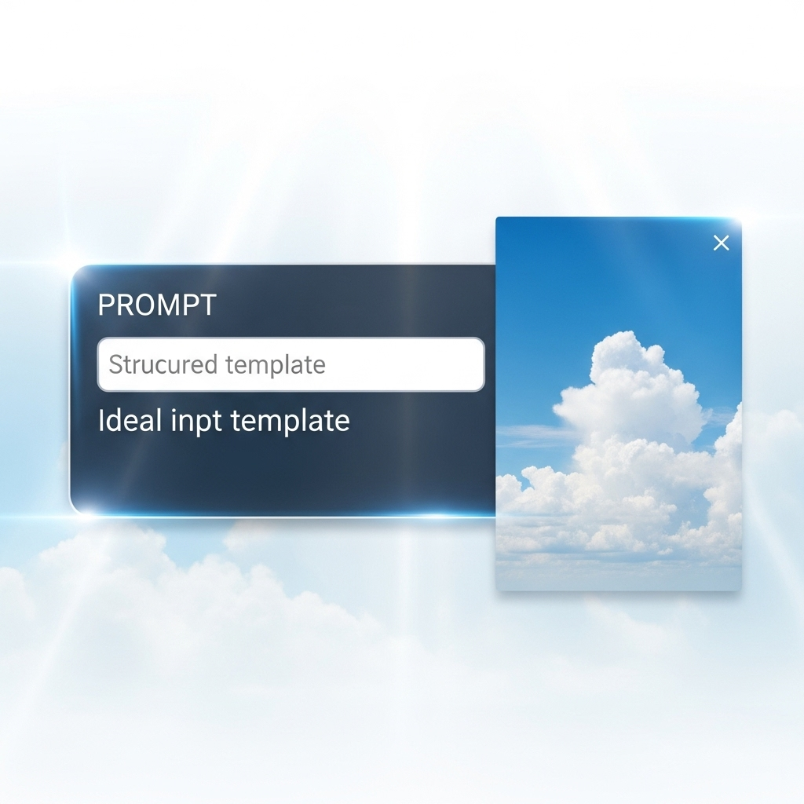
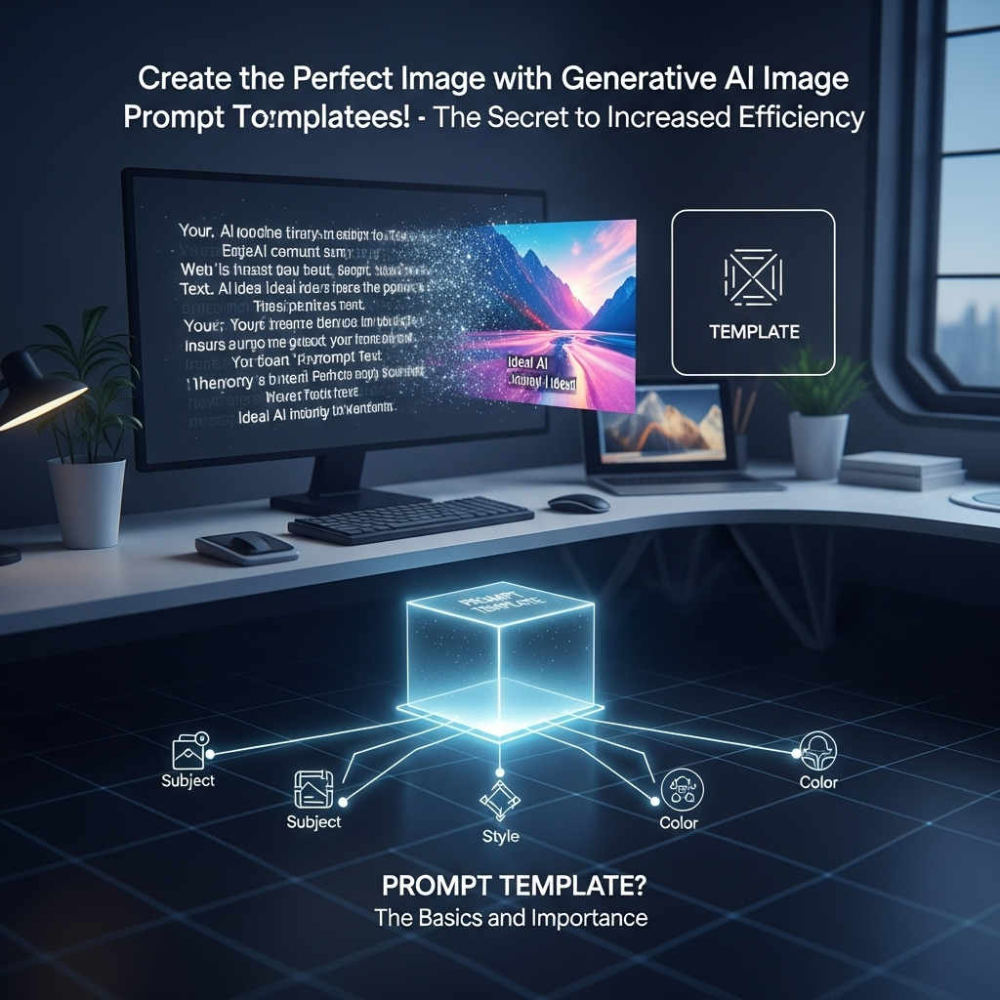

生成AI画像プロンプトテンプレートで理想の画像を！効率UPの秘訣
導入

デジタルクリエイティブの世界は、日進月歩の進化を遂げています。特に近年、生成AI技術の目覚ましい発展は、私たちが画像を制作するプロセスに革命をもたらしました。テキストの指示、すなわち「プロンプト」を入力するだけで、瞬く間に高品質な画像を生成できるようになったのです。これにより、Webデザイナーをはじめとする多くのクリエイターが、これまで想像もできなかったような表現の自由と効率性を手に入れました。
しかし、この素晴らしい技術を最大限に活用するには、一つ大きな壁が立ちはだかります。それは、「理想の画像を生成するための、的確なプロンプトを作成する」という課題です。単にキーワードを羅列するだけでは、AIは私たちの意図を正確に理解してくれません。時には、期待外れの画像が生成され、試行錯誤の末に貴重な時間を浪費してしまうことも少なくありません。特に、Webサイトのデザインにおいて、特定のコンセプトやブランドイメージに合致する画像を迅速に、かつ安定して供給する必要があるWebデザイナーの方々にとっては、このプロンプト作成の難しさが大きな負担となっていることでしょう。
ストックフォトサービスは便利ですが、常に最適な画像が見つかるとは限りませんし、コストもかかります。かといって、一から画像を制作する時間やスキルがない場合も多いでしょう。そんな時に生成AIは強力な味方となるはずですが、その力を引き出す「呪文」とも言えるプロンプトの作成に、多くのWebデザイナーが頭を悩ませています。
そこで本記事では、この課題を解決するための強力なツール「生成AI画像プロンプトテンプレート」に焦点を当てます。プロンプトテンプレートは、まさにこの「理想の画像を生成する」という目標への近道を示してくれる羅針盤のような存在です。テンプレートを活用することで、プロンプト作成の時間を劇的に短縮し、安定して高品質な画像を生成できるようになります。さらに、クライアントの具体的な要望を的確にAIに伝え、修正対応もスムーズに行えるようになるでしょう。
この記事を通じて、生成AI画像プロンプトテンプレートの基本から、その構成要素、活用するメリット、注意点、そして実践的な使い方まで、網羅的にご紹介していきます。落ち着いたトーンで、しかししっかりと、そして何よりも皆さんのクリエイティブな活動に寄り添う親しみやすい雰囲気で、この新しい技術の可能性を共に探求していきましょう。テンプレートを使いこなすことで、あなたのWebデザインワークフローがどのように効率化され、クリエイティブな表現がどのように加速するのか、ぜひご期待ください。さあ、理想の画像を生成する旅に出発しましょう。
生成AI画像プロンプトテンプレートとは？基本と重要性

生成AI画像プロンプトテンプレートは、生成AIを用いて画像を制作する際に、私たちがAIに対して与える指示文（プロンプト）を、特定の目的やスタイルに合わせてあらかじめ構造化し、汎用的に使えるようにしたひな形のことです。まるで料理のレシピのように、必要な材料（要素）と手順（記述順序）が整理されているため、誰でも効率的かつ高品質な画像を生成できるようになります。このセクションでは、プロンプトの基礎知識からAI画像生成の課題、そしてテンプレートがなぜ重要なのか、Webデザイナーが抱える具体的な悩みをどう解決するのかについて、深く掘り下げていきます。
プロンプトの基礎知識とAI画像生成の課題
プロンプトとは、生成AIに対して私たちが望む結果を伝えるための「指示文」です。AI画像生成においては、この指示文が画像の内容、スタイル、構図、色合い、雰囲気など、あらゆる要素を決定づける鍵となります。例えば、「青い空の下、白い砂浜で遊ぶ子供たち、リアルな写真スタイルで」といった具体的なテキストをAIに入力することで、それに合致する画像を生成させることができます。
しかし、このプロンプト作成は一見簡単そうに見えて、実は非常に奥深く、多くの課題をはらんでいます。
まず、「イメージ通りの画像を生成できない」という課題が挙げられます。頭の中にある漠然としたイメージを、AIが理解できる具体的な言葉に落とし込むのは容易ではありません。例えば、「かっこいいデザイン」と入力しても、AIはその「かっこいい」が何を指すのかを具体的に認識できません。Webデザイナーであれば、「ミニマルでモダンなUIデザインの背景に使える、抽象的なグラデーションの画像」といった具体的な表現を求めますが、これをAIが正確に理解できる形で表現するには、かなりの試行錯誤が必要です。
次に、「試行錯誤に時間がかかる」という課題です。理想の画像にたどり着くまでに、何度もプロンプトを修正し、画像を生成し直す必要があります。キーワードを一つ変えるだけで、生成される画像は大きく変わるため、その都度、膨大な時間を費やしてしまうことになります。Web制作の現場では、納期が厳しく、画像素材の準備にかけられる時間は限られているため、この非効率性は大きな負担となります。
さらに、「表現の幅が狭くなりがち」という課題もあります。いつも同じようなプロンプトの書き方をしてしまうと、生成される画像も似たようなものばかりになり、クリエイティブな多様性が失われてしまいます。Webサイトのコンテンツやブランドイメージに合わせて、様々なテイストの画像を生成したいWebデザイナーにとっては、この画一性が足かせとなることも少なくありません。
また、「再現性の低さ」も大きな課題です。一度理想的な画像が生成できたとしても、その時に使ったプロンプトを正確に覚えていなかったり、少しキーワードを変えてしまったりすると、同じような画像を二度と生成できないことがあります。これは、クライアントからの修正依頼や、シリーズで画像を制作する必要がある場合に、非常に困る点です。
これらの課題は、生成AIが持つポテンシャルを最大限に引き出す上での障壁となっていました。プロンプト作成が「職人技」のようになり、一部の熟練者しか使いこなせない状況では、AI画像生成技術が真に普及し、多くのクリエイターの力となることは難しいでしょう。
なぜ生成AI画像プロンプトテンプレートが必要なのか
このようなAI画像生成の課題を解決し、誰もがその恩恵を享受できるようにするために、生成AI画像プロンプトテンプレートが不可欠となります。テンプレートは、プロンプト作成における「羅針盤」であり、「効率化ツール」であり、「学習ガイド」でもあります。
まず、最も大きな理由として「効率化」が挙げられます。 テンプレートは、画像生成に必要な主要な要素（被写体、スタイル、構図、色合いなど）をあらかじめ構造化された形で提示してくれます。これにより、ゼロからプロンプトを考える必要がなくなり、必要な情報を穴埋めしたり、選択肢から選んだりするだけで、一定レベル以上のプロンプトを素早く作成できます。これにより、試行錯誤の時間を大幅に削減し、より多くの時間をクリエイティブなアイデア出しやデザイン作業そのものに充てることが可能になります。Webデザイナーにとって、納期に追われる中で画像素材を迅速に調達できることは、プロジェクト全体の進行を円滑にする上で極めて重要な要素です。
次に、「品質の安定と向上」を実現します。 テンプレートには、効果的なプロンプトの記述順序や、AIが理解しやすいキーワードの組み合わせなど、高品質な画像を生成するための「ベストプラクティス」が凝縮されています。これにより、経験の浅いユーザーでも、安定してイメージに近い、質の高い画像を生成できるようになります。また、特定のスタイルや雰囲気を維持したまま、複数のバリエーション画像を生成する際にも、テンプレートは一貫性を保つ上で非常に役立ちます。ブランドイメージに沿った一貫性のあるビジュアルは、Webサイトの信頼性やプロフェッショナル感を高める上で欠かせません。
さらに、「再現性の向上」にも貢献します。 テンプレートは構造化されているため、一度作成したプロンプトを保存し、再利用することが容易になります。これにより、以前に生成した画像と似たテイストや要素を持つ画像を、後からでも高い精度で再現することが可能になります。クライアントからの細かな修正依頼があった場合でも、テンプレートを基にプロンプトを調整することで、効率的に対応できるようになるでしょう。
そして、「学習効率の向上」も重要な側面です。 テンプレートを使うことで、各プロンプト要素が画像にどのような影響を与えるのかを体系的に学ぶことができます。例えば、「写真スタイル」という要素を「油絵風」に変えるとどうなるか、「暖色系」を「寒色系」に変えるとどうなるか、といった具体的な変化を体験することで、プロンプトの構造やAIの挙動に対する理解を深めることができます。これは、将来的にテンプレートに頼らず、より複雑で独創的なプロンプトを自力で作成するための基盤となります。
このように、生成AI画像プロンプトテンプレートは、AI画像生成の敷居を下げ、その可能性を最大限に引き出すための、まさに「必須ツール」と言える存在なのです。
テンプレートが解決するWebデザイナーの悩み
Webデザイナーの皆様は、日々の業務の中で、様々な画像素材に関する悩みを抱えていることと思います。生成AI画像プロンプトテンプレートは、それらの悩みに直接的にアプローチし、具体的な解決策を提供します。
悩み１：クライアントの抽象的な要望を具体的な画像に落とし込むのが難しい
「もっとおしゃれな感じで」「ユーザーがワクワクするような画像」「清潔感のある雰囲気で」といった抽象的な要望は、Webデザイナーにとって最も頭を悩ませるものの一つです。テンプレートは、このような抽象的な概念を、スタイル、色調、構図、ライティングといった具体的なプロンプト要素に分解し、AIに伝えやすい形に構造化する手助けをします。例えば、「おしゃれな感じ」という要望に対し、テンプレートの「スタイル」項目で「ミニマリストデザイン」「北欧風インテリア」などを選択し、「色調」項目で「パステルカラー」「ホワイトベース」などを指定することで、AIに具体的なイメージを伝えることができます。
悩み２：ストックフォトでは見つからないニッチな画像が必要
特定のテーマや、ユニークな構図、特定のキャラクターなど、既存のストックフォトではなかなか見つからないようなニッチな画像が必要になる場面は少なくありません。テンプレートを使えば、被写体、背景、アクションなどを細かく指定し、まさに「世界に一つだけ」の画像を生成することが可能です。例えば、「未来的な都市の背景で、タブレットを操作するビジネスマンの横顔」といった具体的なシーンも、テンプレートに沿って要素を埋めていけば、効率的に生成できます。
悩み３：画像素材の調達に時間がかかり、納期に間に合わないことがある
Webサイト制作は常に納期との戦いです。画像素材の選定や加工に時間をかけすぎると、他の重要なデザイン作業やコーディング作業に支障をきたしてしまいます。テンプレートは、プロンプト作成の時間を劇的に短縮し、高品質な画像を迅速に生成できるため、画像素材の調達にかかる時間を大幅に削減できます。これにより、全体の制作スケジュールに余裕が生まれ、より質の高いWebサイトを期日までに完成させることが可能になります。
悩み４：画像の一貫性を保つのが難しい（特にシリーズ物やブランドイメージ）
Webサイト全体や、特定のキャンペーンページなど、複数の画像で一貫したトーン＆マナーを保つことは、ブランドイメージを確立する上で非常に重要です。しかし、異なるタイミングで画像を生成したり、複数のデザイナーが関わったりすると、どうしても画像にばらつきが生じがちです。テンプレートを共有し、同じプロンプト構造を用いることで、生成される画像のスタイルや雰囲気に一貫性を持たせることができます。これにより、Webサイト全体の統一感を高め、プロフェッショナルな印象を与えることができます。
悩み５：画像生成の知識が不足しており、AIを使いこなせないと感じる
生成AIの登場は新しい技術であり、その使い方やプロンプトの最適化方法について、まだ十分に知識がないと感じるWebデザイナーも多いでしょう。テンプレートは、いわば「AI画像生成の教科書」のような役割も果たします。テンプレートの各項目を見て、どのような要素が画像生成に影響を与えるのかを直感的に理解できるため、自然とAI画像生成に関する知識やスキルを習得していくことができます。これにより、AIに対する苦手意識を克服し、自信を持って活用できるようになるでしょう。
このように、生成AI画像プロンプトテンプレートは、Webデザイナーが直面する様々な課題に対し、具体的かつ実践的な解決策を提供します。単なる効率化ツールにとどまらず、クリエイティブな表現の幅を広げ、Webサイト制作の品質を高めるための強力な味方となることでしょう。
生成AI画像プロンプトテンプレートの構成要素
生成AI画像プロンプトテンプレートを効果的に活用するためには、その基本的な構成要素と、それぞれの役割を理解することが不可欠です。テンプレートは単なるキーワードの羅列ではなく、AIが画像を生成する上で必要な情報を体系的に整理するための枠組みです。このセクションでは、主要なプロンプト要素とその具体的な役割、そして効果的なプロンプトの記述順序について詳しく解説します。
主要なプロンプト要素とその役割
プロンプトテンプレートは、AIに画像を生成させるための詳細な指示を、複数の要素に分解して記述します。これにより、AIは私たちの意図をより正確に理解し、期待に近い画像を生成できるようになります。以下に、主要なプロンプト要素と、それぞれの役割を具体的に見ていきましょう。
- 被写体 (Subject)
- 役割: 画像の中心となる対象を指定します。人物、動物、物体、風景など、何を描きたいのかを明確に伝えます。
- 具体例:
young woman,cat,apple,mountain range,futuristic city - Webデザインでの活用: サイトのコンセプトに合わせて、ターゲットユーザー層に響く人物像（例：
smiling business woman in a modern office）、商品イメージを伝える物体（例：sleek smartphone on a minimalist desk）、サービスの世界観を表す風景（例：serene natural landscape at sunrise）などを指定します。
- 動作・状態 (Action/State)
- 役割: 被写体がどのような行動をしているか、あるいはどのような状態にあるかを記述します。
- 具体例:
running,reading a book,meditating,sitting,floating - Webデザインでの活用: ユーザーがサービスを利用している様子（例：
person typing on a laptop with a joyful expression）、商品の機能を示す動き（例：hand holding a product, showing its features）、サイトの雰囲気に合わせた静的な状態（例：calm ocean waves crashing on the shore）などを表現します。
- 背景 (Background/Environment)
- 役割: 被写体が存在する場所や環境を指定します。これにより、画像の全体的な雰囲気や文脈が決定されます。
- 具体例:
in a bustling cafe,against a starry night sky,on a wooden table,in a lush forest,minimalist white room - Webデザインでの活用: Webサイトのテーマに合わせた背景（例：
clean, modern office environmentfor a corporate site,cozy home interiorfor a lifestyle blog）、商品の使用シーンを想起させる背景（例：outdoor cafe terracefor a coffee product）などを設定します。
- スタイル (Style/Art Medium)
- 役割: 画像の全体的な視覚表現や芸術的な形式を指定します。写真、イラスト、絵画、アニメなど、様々なスタイルがあります。
- 具体例:
photorealistic,oil painting,watercolor,anime style,pixel art,3D render,vector art,flat design,cyberpunk - Webデザインでの活用: ブランドのトーン＆マナーに合致するスタイルを選択します。例えば、
photorealisticで信頼感やリアリティを、flat designでモダンで親しみやすい印象を、watercolorで柔らかく温かい雰囲気を演出するなど、サイトのデザインテーマに合わせたスタイルを選びます。
- 構図・アングル (Composition/Angle)
- 役割: 被写体が画像内でどのように配置され、どのような視点から撮影（描画）されているかを指定します。
- 具体例:
close-up,wide shot,full body shot,overhead view,low angle,dutch angle,rule of thirds,golden ratio - Webデザインでの活用: Webサイトのレイアウトに合わせて、画像の効果的な見せ方を指定します。例えば、人物の表情を強調したい場合は
close-up、広がりや開放感を出したい場合はwide shot、商品の全体像を見せたい場合はfull body shotなどを選びます。rule of thirdsやgolden ratioといった構図を指定することで、視覚的に美しい画像を生成しやすくなります。
- ライティング (Lighting)
- 役割: 画像内の光の状況や種類を指定します。光は画像の雰囲気や立体感を大きく左右します。
- 具体例:
soft light,hard light,golden hour,backlight,studio lighting,cinematic lighting,neon lights,chiaroscuro - Webデザインでの活用: Webサイトのムードに合わせて光の演出を調整します。
golden hourで温かくノスタルジックな雰囲気を、studio lightingで商品写真のようなクリアな印象を、neon lightsで未来的な世界観を表現するなど、光の選択はデザインの感情的な側面に深く関わります。
- 色調・カラーパレット (Color Palette/Tone)
- 役割: 画像全体の色彩や色合いの傾向を指定します。これにより、画像が持つ感情的なメッセージが強化されます。
- 具体例:
vibrant colors,monochromatic,pastel colors,warm tones,cool tones,earthy colors,neon colors,dark and moody - Webデザインでの活用: ブランドカラーやWebサイトの全体的なカラースキームに合わせて、画像の色調を統一します。
pastel colorsで優しく柔らかい印象を、vibrant colorsで活気やエネルギーを、dark and moodyで洗練された高級感を演出するなど、色の選択はユーザーの感情に直接訴えかけます。
- 品質・詳細度 (Quality/Detail)
- 役割: 生成される画像の解像度や、細部の描写の精密さを指定します。
- 具体例:
ultra detailed,8K resolution,masterpiece,high quality,photo realistic,sharp focus,intricate details - Webデザインでの活用: Webサイトで使用する画像の用途に応じて品質を指定します。ヒーローイメージなど、大きく表示される画像には
8K resolution,masterpieceといった高詳細な指定を、アイコンやサムネイルなど小さく表示される画像にはhigh qualityで十分な場合もあります。
- ネガティブプロンプト (Negative Prompt)
- 役割: 生成してほしくない要素や、避けたい品質を指定します。これは、AIが意図しない画像を生成するのを防ぐために非常に重要です。
- 具体例:
blurry,low quality,deformed,extra limbs,bad anatomy,text,watermark,ugly,disfigured,cropped - Webデザインでの活用: Webサイトのプロフェッショナルな印象を損なうような要素（例：
blurry、low quality）や、人物の不自然な描写（例：deformed,bad anatomy）などを排除するために不可欠です。これにより、より洗練された、使いやすい画像を生成できます。
これらの要素を適切に組み合わせることで、AIは私たちの具体的な指示を理解し、頭の中にあるイメージを具現化する手助けをしてくれます。テンプレートは、これらの要素を「記入欄」として提供することで、抜け漏れなく、かつ効率的にプロンプトを作成できるよう設計されています。
効果的なプロンプトの記述順序
プロンプトの記述順序は、AIが画像を解釈する上で非常に重要です。一般的に、AIはプロンプトの先頭にあるキーワードをより重視する傾向があるため、最も重要度の高い要素から記述していくのが効果的とされています。また、論理的かつ構造的な順序で記述することで、AIの理解を助け、より一貫した結果を得やすくなります。
Webデザイナーが実践しやすい、効果的なプロンプトの記述順序の一般的なガイドラインを以下に示します。
- 主要な被写体と動作・状態 (Subject & Action/State)
- 最も伝えたい核心情報である被写体と、その被写体が何をしているのか、どのような状態にあるのかを最初に記述します。これにより、AIは画像の主役と物語を最初に認識します。
- 例:
A young woman reading a book,/A sleek smartphone on a table,
- 背景・環境 (Background/Environment)
- 被写体が置かれている場所やシーンを次に記述します。これにより、画像の全体的な文脈が設定されます。
- 例:
A young woman reading a book, in a cozy cafe with warm lighting,/A sleek smartphone on a minimalist wooden table, in a modern studio,
- スタイル・画風 (Style/Art Medium)
- 次に、画像の視覚的な表現形式を指定します。これが画像全体の雰囲気を大きく左右します。
- 例:
A young woman reading a book, in a cozy cafe with warm lighting, photorealistic style,/A sleek smartphone on a minimalist wooden table, in a modern studio, 3D render,
- 構図・アングル (Composition/Angle)
- 被写体の見せ方や、カメラの視点を記述します。これにより、画像の視覚的なインパクトやメッセージが強化されます。
- 例:
A young woman reading a book, in a cozy cafe with warm lighting, photorealistic style, close-up shot, depth of field,/A sleek smartphone on a minimalist wooden table, in a modern studio, 3D render, eye-level shot, wide angle,
- ライティング (Lighting)
- 光の状況を指定し、画像のムードや立体感を演出します。
- 例:
A young woman reading a book, in a cozy cafe with warm lighting, photorealistic style, close-up shot, depth of field, soft natural light from window,/A sleek smartphone on a minimalist wooden table, in a modern studio, 3D render, eye-level shot, wide angle, professional studio lighting,
- 色調・カラーパレット (Color Palette/Tone)
- 画像全体の色彩傾向を記述し、統一感や感情的なメッセージを強化します。
- 例:
A young woman reading a book, in a cozy cafe with warm lighting, photorealistic style, close-up shot, depth of field, soft natural light from window, warm sepia tones,/A sleek smartphone on a minimalist wooden table, in a modern studio, 3D render, eye-level shot, wide angle, professional studio lighting, sleek monochromatic color palette,
- 品質・詳細度 (Quality/Detail)
- 画像の最終的な品質や細部の表現に関する指示を追加します。
- 例:
A young woman reading a book, in a cozy cafe with warm lighting, photorealistic style, close-up shot, depth of field, soft natural light from window, warm sepia tones, ultra detailed, 8k, masterpiece,/A sleek smartphone on a minimalist wooden table, in a modern studio, 3D render, eye-level shot, wide angle, professional studio lighting, sleek monochromatic color palette, high resolution, sharp focus,
- ネガティブプロンプト (Negative Prompt)
- ポジティブプロンプトの後に、生成してほしくない要素を記述します。これは、AIモデルによっては別途入力欄が設けられている場合もありますが、一つのプロンプトとして記述する場合は、ポジティブプロンプトの最後に区切り文字（例：
--noや::など、AIモデルによる）を置いて記述します。 - 例:
blurry, low quality, deformed, bad anatomy, text, watermark
- ポジティブプロンプトの後に、生成してほしくない要素を記述します。これは、AIモデルによっては別途入力欄が設けられている場合もありますが、一つのプロンプトとして記述する場合は、ポジティブプロンプトの最後に区切り文字（例：
この順序はあくまで一般的なガイドラインであり、AIモデルや生成したい画像の特性によっては、最も効果的な順序が異なる場合もあります。しかし、この構造を理解し、実践することで、より意図通りの画像を効率的に生成するための強力な基盤を築くことができます。
Webデザイナーの皆様は、この記述順序をテンプレートとして活用し、各項目に具体的なキーワードを埋めていくことで、迷うことなく高品質なプロンプトを作成できるようになるでしょう。各要素の役割を深く理解し、それらを効果的に組み合わせることで、AI画像生成の可能性を最大限に引き出してください。
生成AI画像プロンプトテンプレートを活用するメリット
生成AI画像プロンプトテンプレートは、単にプロンプト作成を楽にするだけでなく、Webデザイナーのクリエイティブワークフロー全体に革新をもたらします。時間短縮、品質向上、クライアントコミュニケーションの円滑化、そして自身のスキルアップまで、多岐にわたるメリットを享受できるでしょう。ここでは、その主要なメリットを一つずつ丁寧に解説していきます。
メリット１．プロンプト作成時間の劇的な短縮
Webサイト制作において、画像素材の準備は避けて通れない重要な工程です。しかし、理想の画像をストックフォトから探し出す、あるいは一から制作するとなると、膨大な時間と労力がかかります。生成AIはこれらの課題を解決する強力なツールですが、前述の通り、プロンプトの試行錯誤自体が新たな時間的コストを生み出す可能性がありました。
ここで、生成AI画像プロンプトテンプレートの真価が発揮されます。テンプレートは、画像生成に必要な要素をあらかじめ構造化し、項目として提示してくれます。これにより、Webデザイナーはゼロからプロンプトを考える必要がなくなり、まるでフォームに記入するかのごとく、必要な情報を埋めていくだけで、質の高いプロンプトを迅速に作成できるようになります。
例えば、あるWebサイトのヒーローイメージとして「都会のビル群を背景に、自信に満ちた表情で立つビジネスパーソンの写真」が必要だとします。通常であれば、どのようなキーワードを組み合わせれば良いか、スタイルや構図はどう指定すべきか、と悩むかもしれません。しかし、テンプレートがあれば、以下のように項目を埋めていくだけでプロンプトが完成します。
- 被写体:
professional business person - 動作・状態:
standing confidently - 背景:
modern city skyline, high-rise buildings - スタイル:
photorealistic, corporate photography - 構図:
full body shot, eye-level, slightly wide angle - ライティング:
bright, natural daylight - 色調:
cool tones, blue and gray dominant - 品質:
ultra detailed, 8K, sharp focus, masterpiece - ネガティブプロンプト:
blurry, low quality, deformed, bad anatomy, text
このように、テンプレートに沿って情報を入力するだけで、複雑なプロンプトを短時間で構築できます。これにより、これまで数十分から数時間かかっていたプロンプト作成と試行錯誤のプロセスが、わずか数分に短縮されることも珍しくありません。
この時間短縮は、Webデザイナーにとって計り知れないメリットをもたらします。浮いた時間を、WebサイトのUI/UXデザインの改善、コーディングの最適化、クライアントとのコミュニケーション、あるいは新しい技術の学習など、より付加価値の高い業務に充てることができます。結果として、プロジェクト全体の生産性が向上し、納期遵守はもちろんのこと、より高品質なアウトプットへと繋がるのです。特に、複数のプロジェクトを並行して進めるWebデザイナーにとっては、この効率化は業務負荷の軽減と、ワークライフバランスの改善にも貢献するでしょう。
メリット２．安定した高品質な画像生成を実現
Webサイトのデザインにおいて、使用する画像素材の品質は、サイト全体の印象を大きく左右します。不安定な品質や一貫性のない画像は、プロフェッショナルな印象を損ない、訪問者の信頼を失う原因にもなりかねません。生成AI画像プロンプトテンプレートは、この品質の安定と向上に大きく貢献します。
テンプレートは、高品質な画像を生成するために必要なプロンプト要素を網羅的に含んでいます。例えば、ultra detailed, 8K resolution, masterpiece, sharp focusといった品質に関するキーワードや、cinematic lighting, golden hour, vibrant colorsといった特定の雰囲気を作り出すためのキーワードがあらかじめ組み込まれている、あるいは選択肢として用意されています。これにより、AIが画像を生成する際の「基準」が明確になり、毎回一定以上の品質を持つ画像を生成しやすくなります。
さらに、テンプレートを使用することで、プロンプトの記述方法に一貫性が生まれます。同じテンプレートを基にプロンプトを作成すれば、たとえ異なる人がプロンプトを入力しても、生成される画像のスタイルやトーンに大きなばらつきが生じにくくなります。これは、特に大規模なWebサイトや、長期にわたるコンテンツ運用において、ブランドイメージの一貫性を保つ上で極めて重要です。
例えば、ある企業のブランドガイドラインで「明るく、清潔感があり、自然光を基調とした写真」が求められているとします。この要件をテンプレートの各項目（スタイル、ライティング、色調など）に落とし込み、標準的なプロンプトとして設定しておけば、誰が画像を生成しても、そのガイドラインに沿った画像が得られやすくなります。これにより、デザインの一貫性が保たれるだけでなく、品質チェックの手間も軽減されます。
また、ネガティブプロンプトの活用も、安定した品質の画像生成には不可欠です。テンプレートには、一般的に避けたい要素（例：blurry, low quality, deformed, text, watermarkなど）が最初から組み込まれていることが多いため、意図しない低品質な画像や不自然な画像が生成されるリスクを最小限に抑えることができます。
このように、生成AI画像プロンプトテンプレートは、プロンプト作成の属人性を排除し、誰でも安定して高品質な画像を生成できる環境を提供します。これにより、Webサイトのビジュアルクオリティが底上げされ、訪問者に対してよりプロフェッショナルで信頼性の高い印象を与えることが可能になります。
メリット３．クライアントの要望を的確に反映
Webデザイナーにとって、クライアントとのコミュニケーションはプロジェクト成功の鍵を握ります。特に、デザインの方向性や画像イメージに関する要望のすり合わせは、しばしば時間と労力を要するプロセスです。クライアントの頭の中にある漠然としたイメージを具体化し、それをAIに正確に伝えることは、プロンプト作成の大きな課題の一つでした。生成AI画像プロンプトテンプレートは、この課題に対して非常に有効な解決策を提供します。
テンプレートは、画像生成に必要な要素を体系的に分解し、具体的な項目として提示します。これにより、クライアントの要望をヒアリングする際に、このテンプレートを共有しながら具体的なイメージをすり合わせることができます。
例えば、クライアントが「もっと未来的な感じの画像が欲しい」と要望した場合、テンプレートの各項目を使って具体的に掘り下げていくことができます。
- スタイル: 「
cyberpunkのような雰囲気ですか？それともminimalist sci-fiのようなクリーンな感じですか？」 - 色調: 「
ネオンカラーを多用しますか？それともモノクロームにアクセントカラーを加えますか？」 - 背景: 「
高層ビルが立ち並ぶ夜景ですか？それとも宇宙空間のような広がりを表現しますか？」 - ライティング: 「
暗闇に浮かび上がる光のようなドラマチックな照明ですか？それとも均一で明るい照明ですか？」
このように、テンプレートの項目に沿って質問を重ねることで、クライアントの抽象的な要望を、AIが理解できる具体的なプロンプト要素へと変換していくことができます。これにより、クライアントの「言いたいこと」とデザイナーの「作りたいもの」の間に生じがちなギャップを埋め、より的確に要望を反映した画像を生成することが可能になります。
また、テンプレートは、生成された画像に対するフィードバックを効率的に収集する際にも役立ちます。クライアントから「もう少し明るくしてほしい」「人物の表情をもう少し笑顔にしたい」といった修正依頼があった場合、テンプレートの「ライティング」や「被写体の状態」といった特定の項目をピンポイントで調整するだけで、迅速に修正対応ができます。これにより、何度も画像を生成し直す手間が省け、修正サイクルが短縮されるため、プロジェクト全体の進行がスムーズになります。
さらに、テンプレートはクライアントへの説明ツールとしても機能します。「このテンプレートのこの部分をこのように変更すれば、このような画像が生成できます」と具体的に示すことで、AI画像生成のプロセスを透明化し、クライアントの理解と信頼を得やすくなります。結果として、クライアント満足度の向上、そしてより円滑なプロジェクト進行へと繋がるでしょう。テンプレートは、単なる技術的なツールではなく、クリエイティブなコミュニケーションを促進する強力な架け橋となるのです。
メリット４．AI画像生成の学習効率が向上
生成AIの技術は日進月歩であり、その活用スキルを習得することは、Webデザイナーにとって今後のキャリアにおいて不可欠な要素となりつつあります。しかし、AI画像生成のプロンプト作成は、試行錯誤の連続であり、体系的な学習が難しいと感じることも少なくありません。ここで、生成AI画像プロンプトテンプレートが、学習効率を飛躍的に向上させる「学習ガイド」としての役割を果たします。
テンプレートは、プロンプトを構成する様々な要素（被写体、スタイル、構図、ライティング、色調など）を明確に区分けして提示します。これにより、各要素が画像生成にどのような影響を与えるのかを、直感的かつ体系的に理解することができます。
例えば、テンプレートの「スタイル」の項目を「photorealistic」から「watercolor」に変更すると、生成される画像がどのように変化するのか。「ライティング」の項目を「soft natural light」から「dramatic cinematic lighting」に変更すると、画像のムードがどのように変わるのか。このように、テンプレートの特定の項目だけを意図的に変更し、その結果を比較することで、各要素の役割や効果を実験的に学ぶことができます。
この「要素分解」と「比較検証」のプロセスは、AI画像生成のプロンプトエンジニアリングの基礎を築く上で非常に効果的です。闇雲にキーワードを試すのではなく、テンプレートという構造化されたフレームワークの中で実験を行うことで、学習の効率が格段に向上します。
また、テンプレートは、効果的なキーワードの組み合わせや、AIが理解しやすい表現方法を学ぶ上でも役立ちます。多くのテンプレートには、具体的な例や推奨されるキーワードが示されているため、それらを参考にしながら自身のプロンプトを構築していくことで、自然とプロンプト作成のベストプラクティスを習得できます。
さらに、テンプレートを使い続けることで、生成したい画像のイメージを、プロンプトの要素に分解して考える「プロンプト的思考」が自然と身についていきます。これは、テンプレートに依存するだけでなく、将来的には自分自身でゼロから高度なプロンプトを作成する能力を養うための土台となります。
AI技術は進化し続けますが、その根底にある「AIに意図を正確に伝える」というプロンプトの基本原則は変わりません。テンプレートを通じてこれらの基本を深く理解し、実践的なスキルを磨くことで、WebデザイナーはAI画像生成の最新トレンドにも柔軟に対応できる、強力なクリエイティブスキルを身につけることができるでしょう。テンプレートは、あなたのAI画像生成の学習曲線を有意義に加速させ、クリエイティブな可能性を広げるための強力なパートナーとなるはずです。
生成AI画像プロンプトテンプレート利用時の注意点・デメリット
生成AI画像プロンプトテンプレートは、多くのメリットをもたらす強力なツールですが、その利用にはいくつかの注意点やデメリットも存在します。これらの側面を理解しておくことで、テンプレートの潜在的な落とし穴を避け、より賢く、効果的に活用できるようになります。ここでは、テンプレート利用時に考慮すべき主なデメリットについて、落ち着いて、しかししっかりと解説していきます。
デメリット１．画一的な画像になりがち
テンプレートは、効率性と安定した品質をもたらす一方で、その性質上、生成される画像が画一的になりやすいという側面を持っています。特に、多くの人が同じテンプレートや、非常に一般的なテンプレートをそのまま使用した場合、似たような構図、スタイル、色調の画像が量産されてしまう可能性があります。
Webデザインにおいて、オリジナリティやブランドの個性は非常に重要な要素です。もし、あなたのWebサイトのビジュアルが、他の多くのサイトと見分けがつかないような画一的なものになってしまったら、訪問者に強い印象を与えることは難しくなります。テンプレートに頼りすぎることで、せっかくのクリエイティブな発想が抑制され、没個性的なデザインに陥ってしまうリスクがあるのです。
例えば、人気の高い「ミニマルなオフィスで働くビジネスパーソン」のテンプレートをそのまま使ったとします。生成される画像は確かに高品質かもしれませんが、同じテンプレートを使った他のWebサイトの画像と酷似してしまう可能性があります。Webサイトが持つ独自のメッセージやブランドストーリーを伝えるためには、単に美しいだけでなく、そのサイトならではの「味」や「個性」が求められます。
このデメリットを回避するためには、テンプレートを「出発点」として捉え、必ずカスタマイズを加える意識が重要です。テンプレートはあくまで骨格であり、そこに自分ならではの肉付けや装飾を施すことで、オリジナリティあふれる画像を生成できます。例えば、特定のモチーフを追加する、色調を微調整する、構図に少し変化を加える、あるいはネガティブプロンプトで特定の要素を排除するといった工夫が考えられます。
テンプレートは、効率化のための手段であって、クリエイティブな思考を停止させるものではありません。テンプレートを使いこなしながらも、常に「この画像が伝えるべきメッセージは何か」「このブランドらしさとは何か」という問いを忘れずに、独自性を追求する姿勢が不可欠です。
デメリット２．テンプレートに依存しすぎるリスク
生成AI画像プロンプトテンプレートは、プロンプト作成の学習効率を向上させるメリットがある一方で、過度に依存しすぎると、自力でプロンプトを作成する能力や、応用力が育ちにくくなるというリスクもはらんでいます。
テンプレートは、特定の目的やスタイルに合わせて最適化されたプロンプトのひな形です。そのため、テンプレートの項目を埋めるだけで、ある程度の品質の画像を生成することができます。しかし、この便利さに慣れてしまうと、「なぜこのキーワードが使われているのか」「この要素を変更すると画像にどのような影響があるのか」といった、プロンプトの背後にある原理やAIの挙動に対する深い理解が追いつかなくなる可能性があります。
結果として、テンプレートが用意されていない、あるいは既存のテンプレートでは対応できないような、全く新しいコンセプトの画像を生成する必要が生じた際に、どうすれば良いか分からなくなってしまうかもしれません。テンプレートにない要素を加えたい、あるいはテンプレートの構造自体を変更したいと思った時に、自力でプロンプトを組み立てるスキルが不足していると、柔軟な対応が難しくなります。
Webデザイナーとして、常に新しい表現やクライアントの多様な要望に応えるためには、AI画像生成の「基本」を理解し、テンプレートを超えた応用力を身につけることが重要です。テンプレートはあくまで「ツール」であり、それを使いこなす「技術」と、その技術を「応用」する能力が求められます。
このリスクを軽減するためには、テンプレートを利用する際にも、常に意識的に学習する姿勢を持つことが大切です。
- 「なぜこのキーワードなのか？」 テンプレート内の各キーワードについて、その意図や効果を考える。
- 「この要素を変えたらどうなるか？」 テンプレートの一部を意図的に変更し、生成される画像の変化を観察・分析する。
- 「このテンプレートの限界は何か？」 テンプレートでは表現しにくい、あるいは表現できない画像について考え、その解決策を模索する。
- 「自分の言葉でプロンプトを書いてみる」 テンプレートを使わずに、ゼロからプロンプトを書いてみる練習を定期的に行う。
このように、テンプレートを「学習の足がかり」として活用し、その背後にあるプロンプトエンジニアリングの知識を深めていくことが、テンプレート依存のリスクを回避し、真のAI画像生成スキルを身につけるための鍵となります。テンプレートはあなたのクリエイティブを加速させる強力な相棒ですが、最終的にハンドルを握るのはあなた自身であることを忘れないでください。
デメリット３．最新のAIモデルへの対応が必要
生成AIの技術進化は非常に速く、新しいAIモデルが次々と登場し、既存のモデルも頻繁にアップデートされます。それぞれのAIモデルには、プロンプトの解釈方法、得意な表現、効果的なキーワードの重み付けなどが異なる特性があります。生成AI画像プロンプトテンプレートは、特定のAIモデルやそのバージョンに合わせて最適化されていることが多いため、最新のAIモデルの登場や既存モデルのアップデートに対応し続ける必要があります。
例えば、あるテンプレートがStable Diffusionの特定のバージョンで非常に効果的だったとしても、MidjourneyやDALL-E 3といった異なるAIモデルでは、同じテンプレートが期待通りの結果をもたらさない可能性があります。また、同じStable Diffusionであっても、バージョンがアップデートされたことで、以前は有効だったキーワードの解釈が変わったり、新しいプロンプトの記述方法が導入されたりすることもあります。
このデメリットは、Webデザイナーが常に最新のAI技術トレンドにアンテナを張り、自身のテンプレートを適宜更新していく必要性を示唆しています。もし、古いテンプレートを使い続けてしまうと、以下のような問題が生じる可能性があります。
- 期待通りの画像が生成されない: 最新のAIモデルが持つ新しい表現力や機能が活用できず、テンプレートが意図しない画像が生成される。
- 効率が低下する: 古いプロンプト記述ではAIが意図を正確に理解できず、何度も試行錯誤が必要になる。
- 競合に差をつけられる: 最新のAIモデルの能力を最大限に引き出している競合他社と比較して、自身のデザインが陳腐に見えてしまう。
- 新しい表現の機会損失: 新しいAIモデルが提供するユニークなスタイルや表現方法を見逃してしまう。
この課題に対処するためには、以下の点に留意することが重要です。
- 情報収集の習慣化: AI画像生成に関する最新のニュースや、各AIモデルのアップデート情報を定期的にチェックする習慣をつけましょう。公式ブログ、コミュニティ、技術系メディアなどを活用します。
- テンプレートの定期的な見直しと更新: 自身が使用しているテンプレートが、最新のAIモデルやそのバージョンに最適化されているかを確認し、必要に応じてキーワードの追加・削除、記述順序の調整などを行います。
- 複数のAIモデルの特性理解: 可能な範囲で、異なるAIモデルのプロンプトの特性や生成傾向を把握し、用途に応じて使い分けられるようにしておくと良いでしょう。
- コミュニティでの情報共有: AI画像生成のコミュニティに参加し、他のユーザーがどのようなプロンプトやテンプレートを活用しているか、どのような問題に直面しているかなどの情報を共有・交換することも有効です。
テンプレートは強力なツールですが、それは「生き物」のように常に変化するAI技術と共に進化していく必要があります。このダイナミックな変化に対応し続けることで、テンプレートはWebデザイナーのクリエイティブな活動を、常に最前線でサポートし続けることができるでしょう。
実践！生成AI画像プロンプトテンプレートを使った画像生成の流れ
これまでのセクションで、生成AI画像プロンプトテンプレートの基本と重要性、そしてそのメリットと注意点について深く理解を深めてきました。ここからは、実際にテンプレートを使って画像を生成する具体的な流れを、Webデザイナーの視点に立って、分かりやすく解説していきます。この実践的なステップを踏むことで、あなたは効率的に、そして意図通りの画像を生成できるようになるでしょう。
流れ１．テンプレート選定と基本プロンプトの入力
生成AI画像プロンプトテンプレートを使った画像生成の第一歩は、まさにその名の通り「テンプレートの選定」と「基本プロンプトの入力」です。この段階で、生成したい画像の全体像を明確にし、そのイメージに最も適したテンプレートを選び、核となる情報をAIに伝えます。
- 生成したい画像のコンセプトを明確にする
- まず、どのようなWebサイトやコンテンツで、どのような目的の画像が必要なのかを具体的に考えます。例えば、「企業のサービス紹介ページのヒーローイメージとして、未来的なテクノロジーを象徴するような抽象的な画像」なのか、「ブログ記事の挿絵として、リラックスした雰囲気でコーヒーを飲む人物のイラスト」なのか、といった具合です。
- この時、クライアントの要望やブランドガイドライン、ターゲットオーディエンスの好みなども考慮に入れると良いでしょう。
- 適切なテンプレートを選定する
- コンセプトが明確になったら、そのイメージに合致するテンプレートを選びます。テンプレートは、Webデザイン用、ポートレート用、風景用、イラスト用、3Dレンダリング用など、様々な種類が存在します。
- 例えば、人物写真が必要であれば「ポートレートテンプレート」、抽象的な背景画像が必要であれば「テクスチャ・背景テンプレート」、イラスト調であれば「イラストレーションテンプレート」といった形で、大まかな方向性でテンプレートを絞り込みます。
- もし、特定のAIモデル（例：Midjourney、Stable Diffusionなど）に最適化されたテンプレートがあれば、それを選ぶとより効果的です。
- 基本プロンプト（核となる要素）を入力する
- 選定したテンプレートを開き、まず最も重要度の高い「被写体（Subject）」と「動作・状態（Action/State）」を入力します。これが画像の「主題」となります。
- 例えば、「都会のビジネスパーソンがパソコンを操作している」というイメージであれば、
- 被写体:
professional business person - 動作・状態:
working on a laptop
- 被写体:
- 抽象的な背景画像であれば、被写体の代わりに「主要な要素」として、
- 被写体:
abstract geometric shapes - 動作・状態:
intertwining, glowing
- 被写体:
- といった形で、画像の核となる情報を入力します。この段階では、まだ詳細なスタイルや構図は気にせず、まずは「何を」描きたいのかをAIに明確に伝えることに集中しましょう。
- この基本プロンプトの入力が、その後の画像の方向性を決定づける重要なステップとなります。テンプレートの項目に沿って、迷いなく、しかし慎重にキーワードを選んでいきましょう。
この最初のステップを丁寧に行うことで、その後の画像生成プロセスがスムーズに進み、理想の画像へと確実に近づくことができます。テンプレートは、あなたの頭の中にある漠然としたイメージを、AIが理解できる具体的な言葉へと変換する強力な手助けとなるでしょう。
流れ２．具体的な指示の追加と調整
基本プロンプトの入力が完了したら、次にテンプレートの残りの項目を埋め、生成したい画像の具体的なディテールを追加していきます。この段階で、スタイル、構図、ライティング、色調といった要素を細かく指定し、より洗練された画像をAIに生成させます。
- スタイル・画風の指定
- Webサイトのブランドイメージやコンテンツのトーン＆マナーに合わせて、画像のスタイルを選択します。
- 例えば、
photorealistic(写真のようにリアルに)、flat design(シンプルでモダンなイラスト)、watercolor(水彩画風)、3D render(立体的なCG) など、テンプレートに用意された選択肢や、自分で考えたキーワードを入力します。 - 例:
photorealistic, corporate photography
- 背景・環境の指定
- 被写体が置かれる場所や環境を具体的に記述します。Webサイトのテーマに合わせた背景を選ぶことで、画像に深みと文脈を与えます。
- 例:
in a modern, minimalist office with large windows, city view in background
- 構図・アングルの調整
- 画像の見せ方や、被写体への視点を指定します。Webサイトのレイアウトや、伝えたいメッセージに合わせて構図を調整します。
close-up(接写で表情を強調)、wide shot(広がりや全体像を見せる)、eye-level shot(自然な視点)、dynamic angle(動きや迫力を出す) など。- 例:
medium shot, eye-level, rule of thirds composition
- ライティングの指定
- 画像全体の雰囲気やムードを決定づける光の状況を指定します。
soft natural light(優しく自然な光)、dramatic cinematic lighting(映画のようなドラマチックな光)、golden hour(夕焼けや朝焼けの温かい光)、studio lighting(均一でクリアな光) など。- 例:
soft, bright natural daylight streaming through the window
- 色調・カラーパレットの指定
- 画像全体の色彩傾向を指定し、ブランドカラーとの調和や、特定の感情的なメッセージを表現します。
cool tones(青や緑を基調とした落ち着いた色)、warm tones(赤やオレンジを基調とした温かい色)、monochromatic(単色系)、vibrant colors(鮮やかな色) など。- 例:
clean and corporate color palette, dominated by blues and whites with subtle warm accents
これらの要素をテンプレートの各項目に沿って入力・調整していくことで、プロンプトは徐々に詳細で具体的なものへと進化していきます。各キーワードが画像にどのような影響を与えるかを意識しながら、慎重に選択していくことが重要です。
この段階で、もし迷うことがあれば、Webサイトの具体的なデザイン案や、クライアントから提供された参考画像などを参考に、最も近い表現を選択するようにしましょう。テンプレートは、あなたのクリエイティブな思考をガイドし、適切なキーワードへと導いてくれる強力なアシスタントとなるはずです。
流れ３．ネガティブプロンプトで不要な要素を除外
生成AI画像プロンプトテンプレートを使った画像生成において、ポジティブプロンプト（生成したい要素）の入力と同じくらい、あるいはそれ以上に重要なのが「ネガティブプロンプト」の活用です。ネガティブプロンプトとは、AIに「生成してほしくない要素」や「避けたい品質」を明確に伝えるための指示文です。これを適切に設定することで、意図しない欠陥や不自然な描写、低品質な画像が生成されるリスクを大幅に減らし、より洗練された、Webサイトにふさわしい画像を効率的に得ることができます。
多くのAI画像生成ツールでは、ネガティブプロンプト専用の入力欄が設けられています。テンプレートにも、一般的に使用されるネガティブプロンプトのリストや、特定のスタイルで避けたい要素が推奨されていることがあります。
以下に、Webデザイナーがネガティブプロンプトで除外したい主な要素と、その具体例を挙げます。
- 品質に関するもの:
blurry,low quality,poorly rendered,bad resolution,grainy,noisy,pixelated,oversaturated,undersaturated- Webサイトのプロフェッショナルな印象を保つため、画像は常にクリアで高解像度であることが求められます。これらのキーワードで品質の低下を防ぎます。
- 不自然な描写に関するもの（特に人物や動物）:
deformed,mutated,extra limbs,missing limbs,bad anatomy,disfigured,ugly,poorly drawn face,ugly eyes,text on image,watermark- 人物や動物を生成する際、AIはしばしば不自然な手足や顔、奇妙なポーズなどを生成することがあります。これらのキーワードで、視覚的に不快な要素や、Webサイトの信頼性を損なう可能性のある描写を排除します。特にWebサイトでは、テキストやウォーターマークが入った画像は使用できないため、これらも必ず除外しましょう。
- 構図・要素の不備に関するもの:
cropped,cut off,too much space,too little space,distracting background- 意図しない部分で画像が切れていたり、背景が散らかっていたりすると、Webサイトのレイアウトに収まらなかったり、メインの被写体から視線が逸れたりする原因になります。
- 特定のスタイルで避けたいもの:
- 例えば、ミニマルなデザインを求めているのに、AIが過剰な装飾を加えてしまう場合があります。その際は、「
overly ornate,cluttered,busy」などのキーワードを追加します。 - 写真スタイルを求めているのに、アニメやイラストのような要素が混ざってしまう場合は、「
illustration,drawing,cartoon」などをネガティブプロンプトに入れます。
- 例えば、ミニマルなデザインを求めているのに、AIが過剰な装飾を加えてしまう場合があります。その際は、「
ネガティブプロンプトの入力例:blurry, low quality, deformed, extra limbs, bad anatomy, disfigured, ugly, poorly drawn face, text, watermark, cropped, over-saturated, noisy
ネガティブプロンプトは、ポジティブプロンプトとセットで活用することで、AIの生成結果をより厳密にコントロールし、理想の画像へと近づけるための強力な手段となります。テンプレートに最初から推奨されるネガティブプロンプトが組み込まれていれば、それをそのまま活用し、さらに必要に応じて上記の例を参考にキーワードを追加・調整していくと良いでしょう。このステップを怠らず、細部にまで気を配ることで、Webサイトにふさわしい高品質な画像を効率的に手に入れることができます。
流れ４．複数回生成で最適な画像を選定
プロンプトテンプレートを活用し、ポジティブプロンプトとネガティブプロンプトを完璧に設定したとしても、AI画像生成は一度で完璧な結果が得られるとは限りません。AIは確率的に画像を生成するため、同じプロンプトを入力しても、毎回少しずつ異なるバリエーションの画像が生成されるのが一般的です。そのため、複数回画像を生成し、その中から最もWebサイトのコンセプトやデザインに合致する最適な画像を選定する作業が不可欠となります。
この「複数回生成と選定」のプロセスは、AI画像生成の最終段階であり、Webデザイナーのセンスと判断力が試される重要なフェーズです。
- 複数回画像を生成する:
- 設定したプロンプトで、まずは数枚から十数枚程度の画像を生成してみましょう。多くのAIツールには、一度に複数の画像を生成する機能や、同じプロンプトで連続して生成する機能が備わっています。
- この時、AIによっては「シード値（Seed Value）」という、画像生成の初期ノイズを決定する数値が指定できる場合があります。シード値を固定すると、同じプロンプトであればほぼ同じ画像が生成されますが、シード値を変更せずに複数回生成することで、AIが異なるバリエーションを試行錯誤する様子を見ることができます。
- また、プロンプトの特定のキーワードの「重み付け」を調整することで、そのキーワードの影響力を増減させ、バリエーションを意図的に作り出すことも可能です（AIモデルによって対応状況が異なります）。
- 生成された画像を評価・比較する:
- 生成された複数の画像を並べて、それぞれの画像を評価します。Webサイトのデザインに組み込むことを想定し、以下の点に着目して比較検討しましょう。
- コンセプトとの合致度: Webサイトのテーマや伝えたいメッセージと、画像がどれだけ一致しているか。
- 品質: 解像度、シャープさ、色彩の鮮やかさなど、技術的な品質はどうか。ネガティブプロンプトで排除したかった要素が残っていないか。
- 構図とレイアウト: Webサイトの特定のセクション（ヒーローイメージ、コンテンツ画像など）に配置した際に、視覚的にバランスが取れているか。テキストや他の要素との組み合わせを想像してみましょう。
- 雰囲気と感情: 画像が持つ雰囲気や、見る人に与える感情（信頼感、楽しさ、落ち着きなど）が、Webサイトのブランドイメージと一致しているか。
- オリジナリティ: テンプレートを使用しているとはいえ、他のサイトと差別化できるような個性や魅力があるか。
- 被写体の表現: 人物や物体が自然に、魅力的に表現されているか。特に人物の表情や手足の描写は注意深く確認します。
- 生成された複数の画像を並べて、それぞれの画像を評価します。Webサイトのデザインに組み込むことを想定し、以下の点に着目して比較検討しましょう。
- 最適な画像を選定する:
- 上記の評価基準に基づき、最もWebサイトにふさわしい一枚、あるいは数枚の画像を選定します。この選定の際には、自分だけでなく、チームメンバーやクライアントにも意見を求めることで、より客観的で納得感のある選択ができるでしょう。
- 時には、完璧な画像が見つからないこともあります。その場合は、選定した画像の良い点と悪い点を分析し、プロンプトテンプレートに戻って調整を加える「プロンプト改善サイクル」へと移行します。
この「複数回生成と選定」のプロセスを通じて、あなたはAIが生成した数々の可能性の中から、Webサイトに命を吹き込む「最高の画像」を見つけ出すことができます。テンプレートは効率的なスタートラインを提供してくれますが、最終的なクリエイティブな判断は、あなたの感性と専門知識にかかっています。このプロセスを楽しみながら、理想の画像を追求していきましょう。
生成AI画像プロンプトテンプレートの活用で理想の画像を生成するコツ
生成AI画像プロンプトテンプレートは、効率的に高品質な画像を生成するための強力なツールですが、ただテンプレートを使うだけでは、その真のポテンシャルを最大限に引き出すことはできません。理想の画像を生成し、クリエイティブな独自性を追求するためには、いくつかのコツと工夫が必要です。このセクションでは、テンプレートをさらに活用し、あなたのクリエイティブを加速させるための秘訣を、親しみやすいトーンでご紹介します。
コツ１．テンプレートをカスタマイズして独自性を出す
テンプレートは、プロンプト作成の効率化と品質の安定化に大いに貢献しますが、そのまま使い続けるだけでは、生成される画像が画一的になり、あなたのWebサイトやブランドの独自性が失われるリスクがあります。理想の画像を生成し、かつオリジナリティを追求するためには、テンプレートを「出発点」として捉え、積極的にカスタマイズしていくことが最も重要なコツです。
テンプレートは、あくまで汎用的な「ひな形」です。そこに、あなたのクリエイティブなアイデアや、Webサイトの具体的なコンセプト、ブランドの個性を吹き込むことで、初めて「あなただけの」テンプレートへと進化します。
カスタマイズの具体的な方法:
- キーワードの追加・変更:
- テンプレートの各項目（被写体、スタイル、背景など）に、より具体的でユニークなキーワードを追加してみましょう。例えば、「モダンなオフィス」というテンプレートの背景に「
large windows overlooking a futuristic cityscape at sunset」といった具体的な描写を加えることで、より独自の雰囲気を演出できます。 - Webサイトのテーマカラーやブランドのキーワードを積極的に盛り込むことも有効です。
- 感情や抽象的な概念を表現するキーワード（例：
serene,vibrant,mysterious,calm）を追加することで、AIが画像のムードをより深く理解し、表現の幅が広がります。
- テンプレートの各項目（被写体、スタイル、背景など）に、より具体的でユニークなキーワードを追加してみましょう。例えば、「モダンなオフィス」というテンプレートの背景に「
- 要素の組み合わせの実験:
- テンプレートに用意されている要素だけでなく、異なるテンプレートの要素を組み合わせてみるのも良い方法です。例えば、「ポートレートテンプレート」の人物に、「風景テンプレート」の特定のライティングや色調を適用してみるなど、異質な要素を組み合わせることで、予期せぬクリエイティブな結果が生まれることがあります。
- ネガティブプロンプトの調整:
- 一般的なネガティブプロンプトだけでなく、あなたの特定のニーズに合わせて、避けたい要素を追加・調整しましょう。例えば、特定のオブジェクト（例：
car,phone）を絶対に入れたくない場合や、特定の色彩（例：red,yellow）を避けたい場合に、ネガティブプロンプトに追加することで、より厳密なコントロールが可能になります。
- 一般的なネガティブプロンプトだけでなく、あなたの特定のニーズに合わせて、避けたい要素を追加・調整しましょう。例えば、特定のオブジェクト（例：
- 自分だけの「お気に入りプロンプト集」を作成する:
- テンプレートをカスタマイズして生成した画像の中で、特に気に入ったものや、Webサイトのイメージにぴったり合ったものがあれば、そのプロンプトを保存しておきましょう。そして、そのプロンプトを基に、さらに新しいテンプレートを作成したり、既存のテンプレートを更新したりすることで、「自分だけの最適化されたテンプレートライブラリ」を構築できます。これは、今後の画像生成において、あなたの強力な資産となります。
テンプレートのカスタマイズは、単なるプロンプトの調整にとどまらず、AI画像生成におけるあなたの「個性」を確立するプロセスです。常に「どうすればもっと自分らしい表現ができるか？」という問いを持ちながら、積極的にテンプレートを改良し、あなただけの理想の画像を追求していきましょう。このプロセスこそが、あなたのクリエイティブを真に加速させる鍵となります。
コツ２．複数のテンプレートを組み合わせてみる
一つのテンプレートで理想の画像が生成できることもありますが、時には、より複雑なイメージや、複数の要素が絡み合うクリエイティブな表現を求める場合があります。そんな時、生成AI画像プロンプトテンプレートの活用を次のレベルに引き上げるコツが、「複数のテンプレートを組み合わせてみる」というアプローチです。
これは、異なる種類のテンプレートが持つ強みを融合させ、単一のテンプレートでは表現しきれない、より豊かで奥行きのある画像を生成するためのテクニックです。まるで料理で異なるジャンルのレシピを組み合わせ、新しい創作料理を生み出すようなものです。
複数のテンプレートを組み合わせる具体的なシナリオと方法:
- 「被写体」と「背景」のテンプレートを組み合わせる:
- 例えば、人物のポートレートに特化したテンプレート（「ポートレートテンプレート」）で、人物の表情、ポーズ、服装、髪型などを細かく指定します。
- そして、その人物を配置したい背景に特化したテンプレート（「風景テンプレート」や「インテリアテンプレート」）から、場所、ライティング、雰囲気に関する要素を抽出します。
- これらを一つのプロンプトに統合することで、例えば「
笑顔の若い女性が、夕焼けに染まる都会のルーフトップガーデンで、コーヒーを飲んでいる、リアルな写真スタイル」といった、より具体的で魅力的なシーンを生成できます。単一のテンプレートでは、ここまで詳細な組み合わせは難しいことが多いでしょう。
- 「スタイル」と「テーマ」のテンプレートを組み合わせる:
- 特定の画風やアートスタイルに特化したテンプレート（例：「サイバーパンクスタイルテンプレート」「水彩画風テンプレート」）と、特定のテーマやモチーフに特化したテンプレート（例：「未来都市テンプレート」「ファンタジー生物テンプレート」）を組み合わせます。
- これにより、「
サイバーパンクな雰囲気で描かれた、日本の伝統的な城、ネオンライトが輝く夜景」といった、ユニークな世界観を持つ画像を生成することが可能になります。Webサイトの特定のキャンペーンや、ブランドの世界観を表現する際に、非常に強力な手法となります。
- 「感情」や「ムード」を重視するテンプレートとの組み合わせ:
- 画像に特定の感情やムードを強く反映させたい場合、例えば「
calm and serene mood template」のような雰囲気指定に特化したテンプレートと、具体的な被写体やシーンを指定するテンプレートを組み合わせます。 - これにより、「
穏やかな光が差し込む図書館で、静かに読書する子供、パステルカラーで描かれたイラスト、心安らぐ雰囲気」といった、感情に訴えかける画像を効率的に生成できます。
- 画像に特定の感情やムードを強く反映させたい場合、例えば「
組み合わせる際の注意点:
- キーワードの重複と優先順位: 異なるテンプレートからキーワードを組み合わせる際、同じ意味を持つキーワードが重複したり、互いに矛盾するキーワードが含まれたりすることがあります。この場合、AIが混乱する可能性があるため、冗長なキーワードは削除し、より重要度の高いキーワードをプロンプトの先頭に配置するなど、優先順位を意識して調整しましょう。
- AIモデルの特性理解: 複数のテンプレートを組み合わせる手法は、AIモデルのプロンプト解釈能力に依存する部分もあります。より高度なプロンプトを理解できるAIモデルであれば、複雑な組み合わせも良好な結果をもたらしやすいでしょう。
複数のテンプレートを組み合わせることで、あなたのクリエイティブな表現の幅は格段に広がります。これは、AI画像生成における「合成」のスキルであり、より複雑で、かつオリジナリティあふれる画像を効率的に生み出すための、非常に有効なコツと言えるでしょう。ぜひ、様々なテンプレートの組み合わせを試して、あなたの理想の画像を追求してみてください。
コツ３．参考画像を分析しプロンプトに落とし込む
生成AI画像プロンプトテンプレートを最大限に活用し、理想の画像を生成するための非常に実践的なコツの一つが、「参考画像を分析し、その要素をプロンプトに落とし込む」というアプローチです。これは、あなたが頭の中に持つ漠然としたイメージを具現化するだけでなく、既存の高品質な画像を模倣し、そこから学びを得て、さらに発展させるための強力な手法となります。
Webデザイナーであれば、Pinterest、Behance、Dribbble、あるいはストックフォトサイトなどで、多くの魅力的な画像を目にする機会があるでしょう。これらの画像をただ「良いな」で終わらせるのではなく、AI画像生成のプロンプト作成の視点から分析することで、あなたのプロンプト作成スキルは飛躍的に向上します。
参考画像を分析しプロンプトに落とし込む具体的なステップ:
- 理想に近い参考画像を見つける:
- まず、あなたのWebサイトのコンセプトや、生成したい画像のイメージに「近い」と感じる参考画像を複数枚見つけます。完全に一致する必要はありませんが、雰囲気、スタイル、色調、構図などで共通点があるものが望ましいです。
- 参考画像を構成要素に分解して分析する:
- 見つけた参考画像を、テンプレートの各プロンプト要素に照らし合わせて、どのようなキーワードで表現できるかを細かく分析します。
- 被写体: 何がメインで写っているか？（例：
young woman,cat,futuristic building） - 動作・状態: 被写体は何をしているか？（例：
smiling,running,glowing） - 背景・環境: どこで撮られているか？（例：
in a cafe,against a mountain,minimalist room） - スタイル・画風: 写真か？イラストか？どんなタッチか？（例：
photorealistic,oil painting,vector art,vaporwave style） - 構図・アングル: どのような視点か？（例：
close-up,wide shot,overhead view,rule of thirds） - ライティング: 光はどこから来ているか？どんな光か？（例：
soft light,backlight,golden hour,neon lights） - 色調・カラーパレット: 全体的な色合いは？（例：
warm tones,pastel colors,monochromatic blue） - 品質・詳細度: どの程度の精細さか？（例：
ultra detailed,sharp focus） - ネガティブ要素: 何が写っていないことで、この画像が魅力的に見えるのか？（例：
blurry,cluttered,text）
- 被写体: 何がメインで写っているか？（例：
- 見つけた参考画像を、テンプレートの各プロンプト要素に照らし合わせて、どのようなキーワードで表現できるかを細かく分析します。
- テンプレートに分析結果を落とし込む:
- 分析したキーワードを、あなたが使用しているプロンプトテンプレートの対応する項目に埋め込んでいきます。この際、複数の参考画像から共通する要素や、特に魅力的だと感じた要素を厳選して組み合わせることで、より強力なプロンプトが構築できます。
- 生成と調整を繰り返す:
- テンプレートに落とし込んだプロンプトで画像を生成し、参考画像との比較を行います。もしイメージと異なる点があれば、プロンプトのキーワードを微調整したり、重み付けを変更したりして、再度生成を繰り返します。この試行錯誤のプロセスを通じて、AIのプロンプト解釈の特性を深く理解し、より狙い通りの画像を生成するスキルが磨かれます。
この「参考画像分析」のコツは、単に既存の画像を模倣するだけでなく、優れた画像の構成要素を言語化し、それをAIに伝える能力を養うトレーニングにもなります。Webデザイナーとして培ってきたデザインの「目」を、AI画像生成の「プロンプト」へと変換するこのスキルは、あなたのクリエイティブな表現力を格段に高めるでしょう。ぜひ、日頃から魅力的な画像を見つけた際には、そのプロンプトを想像してみる習慣をつけてみてください。
コツ４．生成結果を基にプロンプト改善サイクル
生成AI画像プロンプトテンプレートを最大限に活用し、理想の画像を生成するための最後の、そして最も重要なコツは、「生成結果を基にプロンプト改善サイクルを回す」ことです。これは、PDCAサイクル（Plan-Do-Check-Act）の考え方をAI画像生成に適用するものであり、継続的な改善を通じて、プロンプトの精度とあなたのスキルを向上させるための不可欠なプロセスです。
どんなに優れたテンプレートを使っても、一度の生成で完璧な画像が得られることは稀です。AIは私たちの指示を解釈する際に、常にわずかな「遊び」や「不確定要素」を含んでいます。そのため、生成された画像を客観的に評価し、その結果を次のプロンプト作成に活かす「改善サイクル」を回すことが、理想の画像にたどり着くための最短ルートとなります。
プロンプト改善サイクルの具体的なステップ:
- Plan (計画): テンプレートでプロンプトを作成
- これまで解説してきたように、Webサイトのコンセプトに合わせ、テンプレートを選定し、ポジティブプロンプトとネガティブプロンプトを丁寧に作成します。これが最初の「計画」です。
- Do (実行): 画像を生成する
- 作成したプロンプトをAI画像生成ツールに入力し、複数枚の画像を生成します。この時、一度に多くのバリエーションを生成したり、シード値を固定して微調整の効果を確認したりするのも良いでしょう。
- Check (評価): 生成結果を分析・評価する
- 生成された画像を、Webサイトの要件やあなたのイメージと照らし合わせて、客観的に評価します。
- 良かった点: どの要素が意図通りに表現されたか？
- 改善点: どの要素がイメージと異なったか？（例：スタイルが違う、色が合わない、構図が悪い、被写体が不自然など）
- 具体的な原因の特定: 「色が明るすぎる」と感じたなら、「ライティング」や「色調」のプロンプトに問題がある可能性。「人物の腕が不自然」なら、「ネガティブプロンプト」の不足か、被写体の描写キーワードの調整が必要、といった具合に、具体的な原因を特定しようと努めます。
- この評価の段階で、必要であればチームメンバーやクライアントからのフィードバックも積極的に取り入れましょう。
- 生成された画像を、Webサイトの要件やあなたのイメージと照らし合わせて、客観的に評価します。
- Act (改善): プロンプトを修正・洗練させる
- 評価で見つかった改善点と特定した原因に基づき、プロンプトテンプレートの該当箇所を修正します。
- キーワードの追加・削除
- キーワードの重み付けの調整（AIモデルが対応していれば）
- 記述順序の変更
- ネガティブプロンプトの強化
- 参考画像の再分析と新しいキーワードの導入
- 修正が完了したら、再び「Do (実行)」のステップに戻り、画像を生成します。
- 評価で見つかった改善点と特定した原因に基づき、プロンプトテンプレートの該当箇所を修正します。
このサイクルを繰り返し回すことで、プロンプトの精度は徐々に高まり、あなたの意図をAIに伝える能力も磨かれていきます。最初は時間がかかると感じるかもしれませんが、この地道な改善の積み重ねが、最終的にはより少ない試行錯誤で理想の画像を生成できるスキルへと繋がります。
Webデザイナーとして、AI画像生成の技術を真に使いこなすためには、このプロンプト改善サイクルを日常のワークフローに組み込むことが不可欠です。テンプレートはあなたに優れたスタートラインを提供しますが、その後の「改善」の努力こそが、AIを真のクリエイティブパートナーへと昇華させる鍵となるでしょう。
まとめ：生成AI画像プロンプトテンプレートでクリエイティブを加速
生成AI画像プロンプトテンプレートは、Webデザイナーをはじめとするクリエイターの皆様にとって、まさに「理想の画像を効率的に生成する」ための強力な羅針盤であり、無限の可能性を秘めたツールであることが、本記事を通じてお分かりいただけたかと思います。
導入で触れたように、生成AIの登場はクリエイティブプロセスに革命をもたらしましたが、その力を最大限に引き出すプロンプト作成には、多くのWebデザイナーが課題を感じていました。漠然としたイメージをAIが理解できる具体的な言葉に落とし込む難しさ、試行錯誤に費やされる時間、そして品質の安定性や再現性の確保。これらは、日々のWebサイト制作において、デザイナーの皆様の貴重な時間とクリエイティブなエネルギーを奪ってきました。
しかし、生成AI画像プロンプトテンプレートは、これらの悩みに包括的な解決策を提示します。
テンプレートは、画像生成に必要な要素を体系的に整理し、構造化された形で提供することで、プロンプト作成にかかる時間を劇的に短縮します。まるでフォームに記入するかのごとく、必要な情報を埋めていくだけで、高品質なプロンプトが完成するのです。これにより、あなたは画像素材の調達に費やしていた時間を、WebサイトのUI/UXデザインの改善や、より戦略的なコンテンツ企画など、本来のクリエイティブな業務に集中できるようになります。
さらに、テンプレートが提供するベストプラクティスに基づいたプロンプトは、生成される画像の品質を安定させ、Webサイト全体のビジュアルの一貫性を保つ上で不可欠な要素となります。クライアントの抽象的な要望も、テンプレートの項目に沿って具体的に掘り下げていくことで、的確にAIに伝え、期待通りの画像を生成することが可能になり、コミュニケーションの円滑化にも貢献します。そして、テンプレートを通じて各プロンプト要素の影響を体系的に学ぶことで、AI画像生成のスキルは着実に向上し、あなたのクリエイティブな表現の幅は無限に広がっていくでしょう。
もちろん、テンプレートの利用には注意点もあります。画一的な画像になりがちなリスクや、テンプレートに依存しすぎることで応用力が育ちにくくなる可能性、そして常に進化するAIモデルへの対応の必要性など、これらを理解し、賢く対処することが重要です。テンプレートはあくまで「ツール」であり、「ガイド」です。その骨格を基に、あなた自身のクリエイティブな感性やアイデアを吹き込み、積極的にカスタマイズしていくことで、初めて真の独自性が生まれます。
実践的な活用方法としては、まず目的に合ったテンプレートを選び、基本プロンプトを入力することから始めます。次に、スタイル、構図、ライティング、色調などの具体的な指示を追加し、ネガティブプロンプトで不要な要素を排除することで、プロンプトを洗練させていきます。そして、複数回生成された画像の中から最適なものを選定し、もし理想と異なる点があれば、その結果を基にプロンプトを改善するサイクルを回し続けることが、理想の画像にたどり着くための鍵となります。
テンプレートをカスタマイズして独自性を出し、時には複数のテンプレートを組み合わせて新たな表現を探求し、参考画像を分析してプロンプトに落とし込む。そして、生成結果から学び、プロンプトを継続的に改善していく。これらのコツを実践することで、あなたは生成AI画像プロンプトテンプレートの真の力を引き出し、あなたのクリエイティブな活動を、これまで想像もできなかったレベルへと加速させることができるでしょう。
生成AIの時代において、Webデザイナーの役割は、単にデザインツールを使いこなすだけでなく、AIという強力なパートナーと対話し、その能力を最大限に引き出す「クリエイティブ・ディレクター」としての側面がますます重要になります。プロンプトテンプレートは、その対話を円滑にし、あなたの創造性を解き放つための、最も信頼できる相棒となるはずです。さあ、テンプレートを手に、あなたの理想の画像を、そしてWebデザインの新しい未来を、共に創造していきましょう。